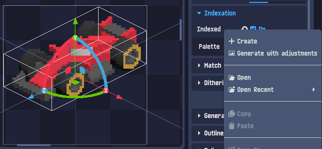
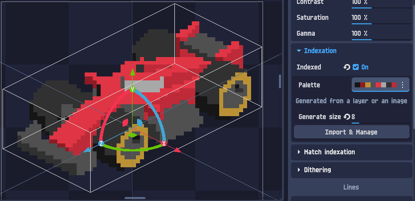
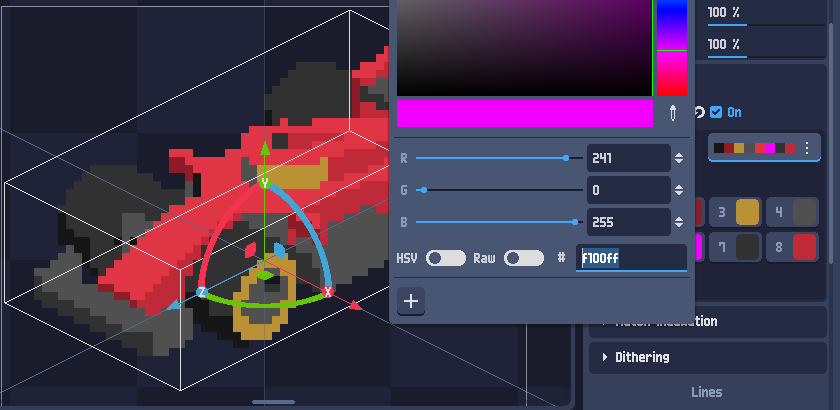
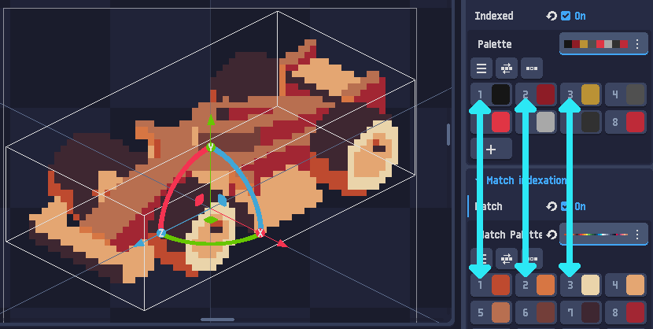
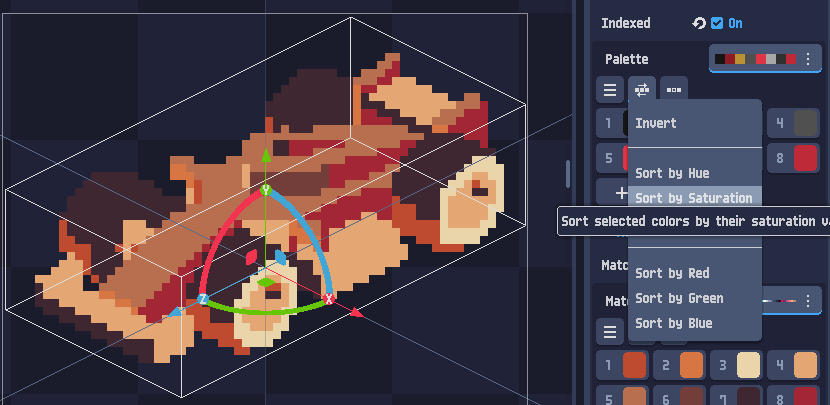
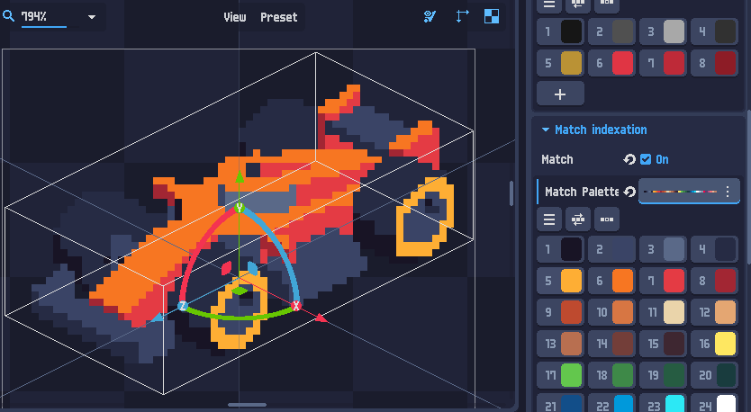
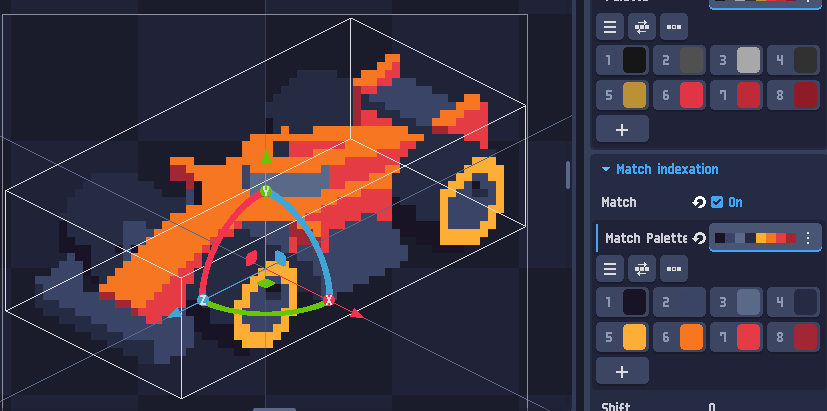
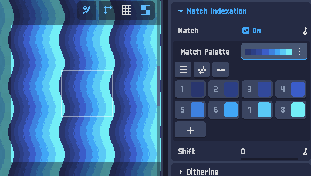

Szín-indexelés mélységében
paletták, Match, color cycling
Az indexelés (Indexation) a pixel art lelke: a képet rákényszeríti egy fix palettára úgy, hogy minden képpontot a paletta legközelebbi színére cserél. Ebben a leckében megtanulod palettát generálni és szerkeszteni, palettát index szerint cserélni (Match indexation), és a Shift-tel color cycling animációt készíteni — élő demókkal.
Mi az a szín-indexelés?
Egy hagyományos kép több tízezer különböző színt tartalmaz (lágy átmenetek, árnyékolás, anti-aliasing). A „valódi” pixel art ezzel szemben kevés, jól megválasztott színből épül fel. Az indexelés hidalja át a kettőt: fogsz egy fix palettát (pl. 8 vagy 16 szín), és a PixelOver minden képpontot lecserél a palettán lévő hozzá legközelebbi színre.
eredeti pixel színe paletta (fix) eredmény RGB(203, 78, 64) ──► keresd a legközelebbi színt ──► paletta-szín #4 (euklideszi táv. az RGB-ben) minden pixelre ugyanez fut le → a kép a paletta színeire „szűkül”
Miért éri meg? Egységes hangulat (minden kép ugyanazt a palettát használja), kicsi színszám (retró platformok, kis fájlméret), és a kézi pixel-art paletták (pl. Sweetie 16, PICO-8) profi, „összeállt” látványt adnak.
Húzd a csúszkát: ennyi színre generálunk palettát a képből (median-cut), majd minden pixelt a legközelebbi paletta-színre cserélünk — pont, ahogy a PixelOver.
Kevés színnél „poszteres”, sok színnél finomabb. Az Eredeti gombbal összeveted a nyers képpel.
Bekapcsolás és paletta hozzáadása
Az indexelés a Layer Shader panel (jobb oldal) Indexation szekciójában lakik. Két dolog kell hozzá:
- Kapcsold be: Indexation ▸ Indexed: On.
- Adj hozzá egy palettát a Palette mező melletti ⋮ menüből.

Create), generálhatsz a képből (Generate with adjustments), vagy meglévőt nyithatsz (Open / Open Recent).A palettát háromféleképp kaphatod meg:
| Módszer | Mikor |
|---|---|
| Kézzel (Create) | Ha pontosan tudod, milyen színeket akarsz, vagy nulláról építesz palettát. |
| Képből / rétegből generálva | Kezdéshez ez a legjobb — a kép saját színeiből áll elő reprezentatív paletta (lásd a 3. fejezet). |
| Megnyitva fájlból (Open) | Kész pixel-art palettát töltesz be (pl. egy .poshader/paletta-fájlból, Sweetie 16 stb.). |
Paletta generálása (ajánlott)
A legbiztosabb kiindulás: hagyd, hogy a PixelOver a jelenlegi réteg színeiből generáljon palettát. Állítsd be a Generate size értéket (ennyi szín legyen), és a program kiválasztja a kép legjellemzőbb színeit.

Indexed: On, a Palette melletti csík a 8 generált szín, alatta „Generated from a layer or an image”, a Generate size = 8, és az Import & Manage gomb a szerkesztőhöz.A cél-színszám. 8 szín tömör, poszteres pixel-art; 16–24 finomabb átmeneteket enged. A PixelOver a kép színeloszlása alapján választ — a fenti demóban (1. fejezet) ugyanezt a csúszkát tekergetted.
A Import & Manage gomb nyitja meg a paletta-szerkesztőt, ahol a színeket sorba rendezheted, módosíthatod, törölheted vagy újakat adhatsz hozzá. Erről szól a következő fejezet.
A paletta szerkesztése — sorrend vs. érték
Itt van a fejezet, amit a legtöbben félreértenek. A paletta-szerkesztőben kétféle dolgot tehetsz, és a kettőnek gyökeresen más a hatása az indexelt képre:
| Művelet | Hatás a képre | Miért |
|---|---|---|
| Sorrend megváltoztatása | SEMMI | Az indexelés a legközelebbi színt keresi. A színkészlet ugyanaz marad, csak más a sorszámuk → a választás nem változik. |
| Érték (szín) megváltoztatása | VÁLTOZIK | Más színkészlet → egyes pixelekhez most más szín lesz a legközelebbi → átrendeződik a kép. |

HSV/Raw, hex mező). A példában a pink (#F100FF) sosem lesz legközelebbi egyetlen pixelhez sem → egyszerűen nem használt szín marad.8 színű, a képből generált paletta. Próbáld ki mindkét műveletet, és figyeld a „megváltozott pixelek” számlálót!
Match indexation — csere index szerint
A Match indexation egészen máshogy működik, mint az indexelés. Nem a legközelebbi színt keresi — hanem a palettaindex alapján cserél. Vagyis: az indexelő paletta i. színe → a match paletta i. színére.
INDEXATION pixel színe ─► legközelebbi paletta-szín (érték-alapú) MATCH index #1 ─► match-paletta #1 index #2 ─► match-paletta #2 (index-alapú) index #3 ─► match-paletta #3 ... pl. ha indexelő #1 = piros és match #1 = kék → a piros pixelekből kék lesz

A bal oldali (indexelő) paletta fix. Válassz match palettát: a kép index szerint átfestődik — az eloszlás marad.
Workflow: paletta-csere lépésről lépésre
Mivel a Match indexation index szerint cserél, a siker kulcsa, hogy a két paletta indexei összepasszoljanak. A hivatalos, bevált munkamenet három lépés:
1. lépés — Rendezd sorba az eredeti palettát
A paletta-szerkesztő rendező-menüjével (Sort by Hue / Saturation / Red / Green / Blue, vagy Invert) tedd áttekinthetővé az indexelő palettát — pl. világostól sötétig, vagy színárnyalat szerint.

Sort by Hue / Saturation / Red / Green / Blue és Invert. A rendezés nem változtatja meg a képet (lásd 4. fejezet!) — csak átláthatóbbá teszi a párosítást.2. lépés — Helyezd a match-színeket azonos pozícióba
A match palettában fogd-és-vidd (drag & drop) mozdulattal rendezd a színeket ugyanazokra a pozíciókra (indexekre), mint az eredetiben. Így a sötét az sötétre, a világos a világosra képződik — az átfestés koherens marad.

3. lépés — Töröld a felesleget
Végül törölj minden olyan match-színt, ami nem párosul indexelő-színnel — a match palettának annyi színe legyen, mint az indexelőnek (itt 8).

Shift paraméter is — ez lesz a 7. fejezet főszereplője.A rendezés az indexelt képet nem rontja el (legközelebbi-szín, sorrend-független). A match viszont index-alapú — ott a sorrend a minden. Ezért rendezünk előbb, párosítunk utána.
Color cycling — Shift-tel
A Match indexation panelen van egy Shift érték, ami körbetolja a match paletta színpozícióit. Ha a Shift-et folyamatosan léptetjük, a színek körbeforognak az indexeken — a kép animálódik, pedig egyetlen pixel sem mozdul. Ez a klasszikus color cycling (paletta-animáció): víz csordogál, láva folyik, fáklya lobog — szinte ingyen.

Shift értéke lépteti a színpozíciókat.Shift = 0: index ─► match[ index ] Shift = 1: index ─► match[ (index + 1) % N ] Shift = 2: index ─► match[ (index + 2) % N ] ... és így tovább, körbe a paletta egy ciklikus „szalag”; a Shift körbeforgatja → folyás-illúzió
Egy ciklikus „szalag”-palettára festett hullámminta. A Shift körbeforgatja a színeket — a pixelek helyben maradnak.
Állítsd meg a lejátszást, és told kézzel a Shiftet — látod, hogy csak a színek lépnek tovább a szalagon.
Összefoglaló & merre tovább?
A teljes indexelési munkamenet egy lapon:
- Bekapcsolás: Indexation ▸ Indexed: On, majd adj hozzá palettát.
- Generálás: Generate size beállítása, paletta a kép színeiből — minden pixel a legközelebbi színre.
- Szerkesztés: a sorrend nem számít, az érték igen. A nem használt színek törölhetők.
- Match: index-alapú átfestés egy szebb palettára — az eloszlás marad.
- Workflow: rendezd (Sort) → párosítsd drag&drop-pal → töröld a felesleget.
- Color cycling: a Shift léptetésével ciklikus palettán folyás-animáció.
- Color cycling — a paletta-animáció önálló, mélyebb tutorialja.
- Material editing — anyagok és effektek a shaderben.
- Dithering (a réteg-shaderben) — kevés színnel finomabb átmenetek, jól megfér az indexeléssel.
- Az alapok: Első lépések 2D.
A legfontosabb gondolat: az indexelés érték-alapú (legközelebbi szín, sorrend-független), a Match index-alapú (a sorrend a minden), a color cycling pedig nem más, mint a Match palettát körbeforgató Shift. Ha ez a három a fejedben összeáll, a paletták többé nem fognak meglepetést okozni.